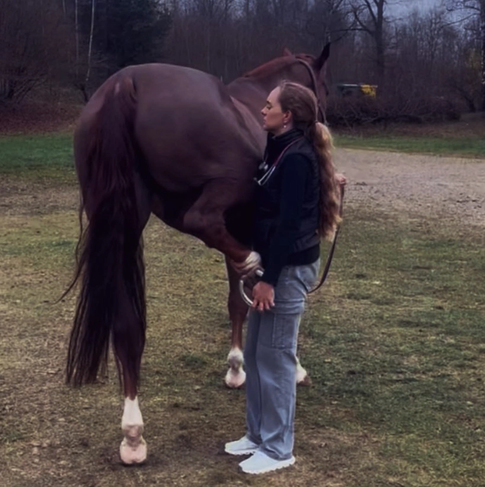

HORSE PRE-PURCHASE EXAMINATIONS in Spain
Independent equine veterinary assessment, on site throughout Spain. European travel is also available when required.
For buyers in Spain and abroad
Buying a horse in Spain, with clear information.
A pre-purchase examination helps assess the horse before you make a buying decision. The examination is tailored to the intended use, competition level and the buyer’s specific concerns.
The service is independent and carried out where the horse is located. Findings are explained clearly and placed in context so you can understand their relevance before deciding.

What it can include
An assessment tailored to the horse and intended use.
The scope is agreed in advance and can vary according to the horse, intended use and tests required.
Coverage
Pre-purchase examinations throughout Spain.
Travel to the horse’s location anywhere in Spain, without requiring the horse to be transported to a clinic. Based in Badajoz, with the pre-purchase service designed for buyers and horses across Spain.
For purchases outside Spain, travel to other European countries can also be arranged.
International buyers
Buying a horse in Spain from abroad?
The horse can be examined directly in Spain and the report can be delivered in English. Findings can also be discussed with you in English before you make your decision.
Frequently asked questions
Before booking the PPE.
Do you travel throughout Spain for pre-purchase examinations?
Yes. The service is designed for on-site examinations wherever the horse is located in Spain.
Can the report be provided in English?
Yes. The report and direct communication with the buyer can be in English or Spanish.
Are X-rays always included?
The radiographic protocol and any additional tests are agreed according to the horse, intended use and buyer’s requirements.
Can you travel outside Spain?
Yes. Travel to other European countries can be arranged when required.